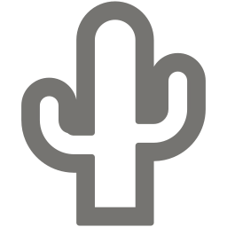

DESBRAVANDO
MONÓLITOS
13+
TRILHAS MAPEADAS
3
NÍVEIS DE DIFICULDADE
4
ANOS DE GRUPO
Conhecida popularmente como a "Rainha do Sertão Central", Quixadá torna-se marcante no território cearense pela beleza única das suas paisagens com formações rochosas, pelos açudes que espelham o pôr do sol e pelos pontos históricos que são tesouros culturais do Ceará. São cartões postais da cidade a Pedra da Galinha Choca, o Açude do Cedro, os monólitos dentro de um cenário sertanejo, o Santuário da Mãe Rainha, o Memorial da escritora Rachel de Queiroz.
Este conjunto de atrações visuais repleto de significado tem atraído turistas do estado, do Brasil e do mundo inteiro. Mas não apenas com o intuito de passeio: há grupos que se aventuram por solo quixadaense para os desafios dos esportes de aventura.

Caatinga BiomaÁrea territorial de aproximadamente 2.020,587km²
População estimada de 87728 pessoas
Fundada em 1870
Distância de 167 KM da capital